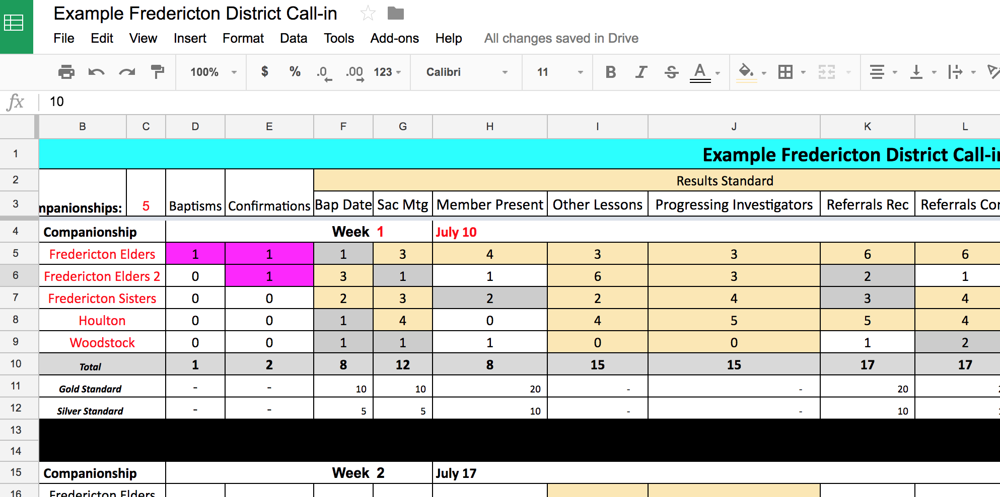
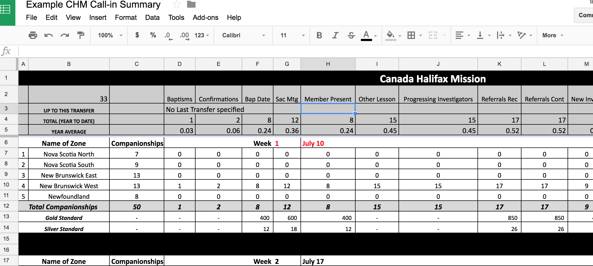
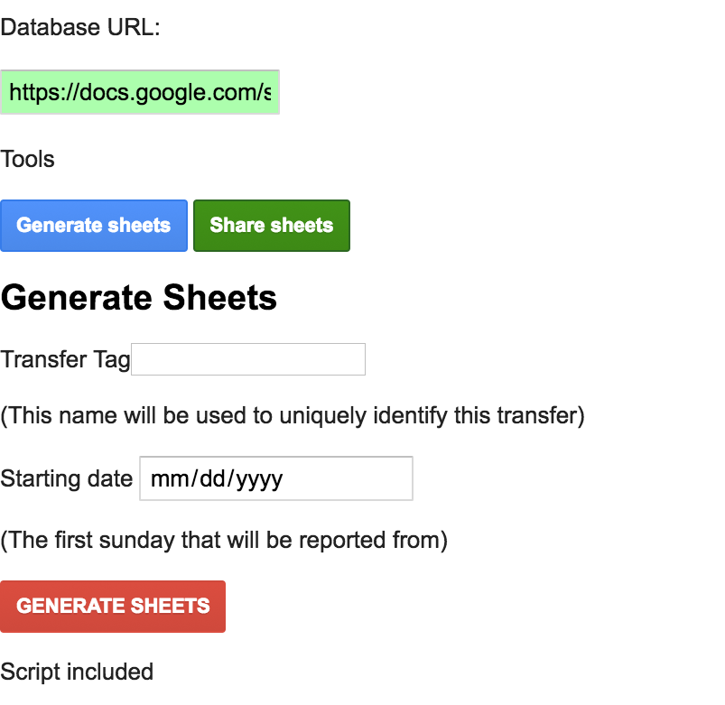
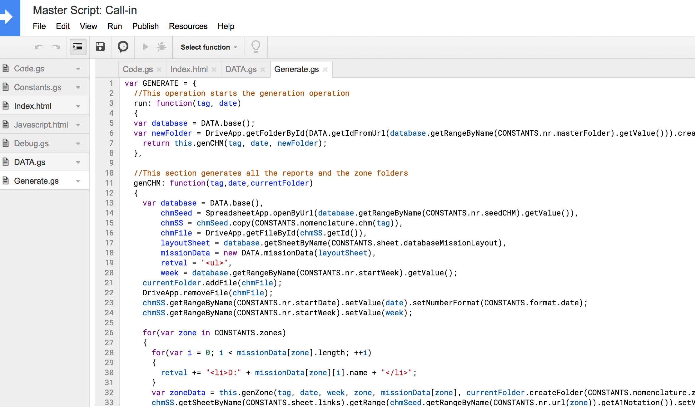

About Retention Tree
<Click here to see project on Google Drive>"Retention Tree" was my nickname for a project I did while I was serving as a volunteer representative (missionary) for my church in eastern Canada. Our mission was using a process of calling to collect statistics for the different areas, divided into zones, districts, and companionships. These numbers would be collected on "Call-in sheets" and passed up to the mission president.
On a previous project, a friend of mine noticed my skills with computers and decided to leverage it to expedite this process, with approval from the mission president. Each area in the mission had a google account, so I used google sheets to create 6-week call in reports and send them around the mission. There was one for each district, then one for each "zone", and then one for the whole mission. They were linked together so numbers reported on the district sheets displayed and were counted on the zone and mission level.
Here's an example of a district level sheet for Fredericton, New Brunswick, with dummy data filled in.
And here's an example of the mission wide sheet. Note the district dummy data automatically tallied on the page.
While this initial creation was a success, once the 6-week period was over, it lead to some confusion. People were manually creating copies of the individual pages, which were not properly linked together. Some new districts and areas were created and others removed, meaning not only new sheets but new rows added to sheets, some rows removed. If this was done wrong, formulas in the spreadsheets would be removed. To ensure it was done right, I had to manually recreate the new sheets for each district, zone, and the mission, and share them out to the respective emails.
However, I was nearing the end of my service, and this was not an ideal long-term solution. I was asked if I could was capable of creating an automatic process for it... and so I did!
This is a picture of the very simplistic website that runs the script on Google Drive I created (A "Transfer" was the term used for a 6-week period). Over course of the project many modifications were made to what was required of the sheets, and I did my best to accomodate with what was possible of the technology and my ability at the time.
The app ran off a central ".root" directory (hence why I decided to call it "Retention Tree"). It had a spreadsheet that had information on the amount of districts and companionships, their names and emails, and it had templates "seeds" for the spreadsheets. Finally, it had the actual script to run the thing, and a URL to the webapp.
I worked hard on it, and it worked well for a good while. After my service I still got a few calls about it. In the end, the rules for managing sheet permissions were difficult to automate, and some of the less tech-savvy missionaries would accidentally find ways to break their sheets, and consequently larger parts of the system. It has always been reversable, but still a cause of pain. After a few months at home I relinquished finally all access to the project, after making this scrubbed copy without private/mission information for my portfolio.